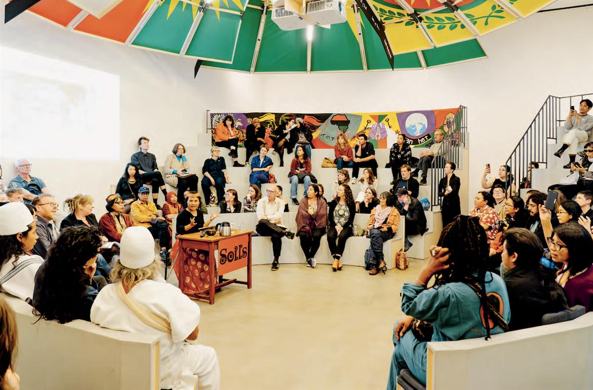
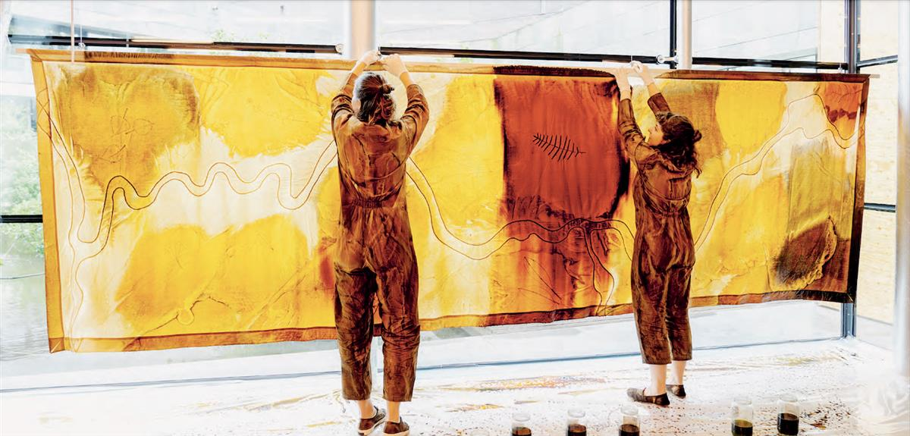
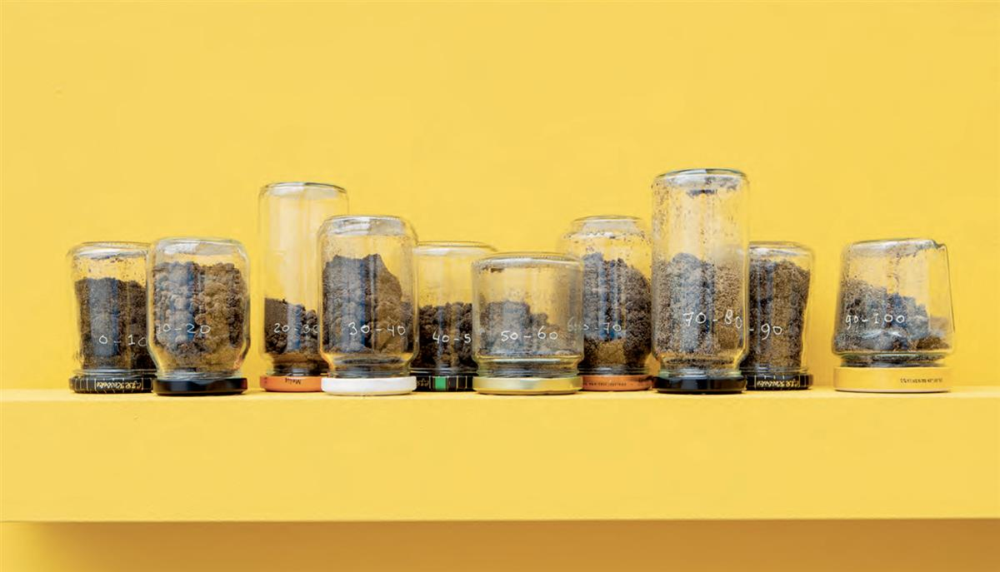
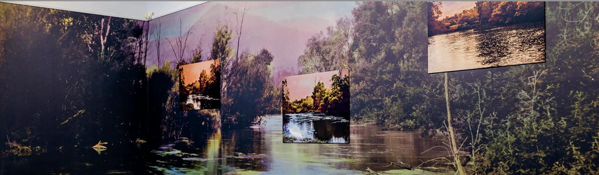

ON SOURCE: L'INTERNATIONALE
Soilswas published on the occasion of the eponymous exhibition at the Van Abbemuseum.
Soil is a strong and resistant material. It is alive, it breathes, and it can recover. In this exhibition, soil is seen as both matter and metaphor. For some, soil is used as an artistic vehicle. For others, soil is a metaphor for the possibility of not only resistance but also the re-existence of under-standing about our relations with the Earth today.
The title of the project comes from the Palestinian writer and mathematician Munir Fasheh, who proposes four ‘soils’ as core to life on Earth. They are earth soil, cultural soil, communal soil and affection-spiritual soil.* These are the soils that we must nurture in order for us and all life on the planet to be cared for and nurtured by the soils in return. We believe that art can help this nurturing by creating a sense of tangible relations that build on a quiet sense of mutual benefit and common interest. This exhibition sets out to show how those relations might be possible from points of view grounded in places that are called Wurundjeri Country, Rangan, Wallachia, Sinanché and De Peel amongst others.
This book is a reflection on the Soils exhibition in the Van Abbemuseum. The exhibition was five years in the planning and the book leads you through the various phases of its realisation. Alongside a rich selection of images, it includes texts by the three curators, artists and key interlocutors: Teresa Cos Rebollo, Zena Cumpston Charles Esche, Wapke Feenstra/Inez Dekker, Victoria Lynn, Struggles for Sovereignty and Rolando Vazquez.
*Munir Fasheh, speaker, From Education to Soil: Ecoversities Planetary Gathering 2020, 4 December 2020, virtual, from 08:57, ecoversities.org, accessed 16 June 2023.
2024
ISBN 978-94-90757-58-8




ON SOURCE: L'INTERNATIONALE